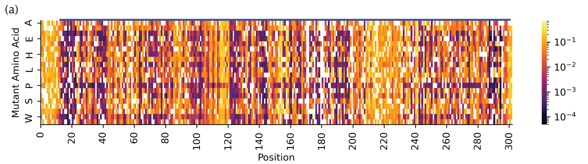
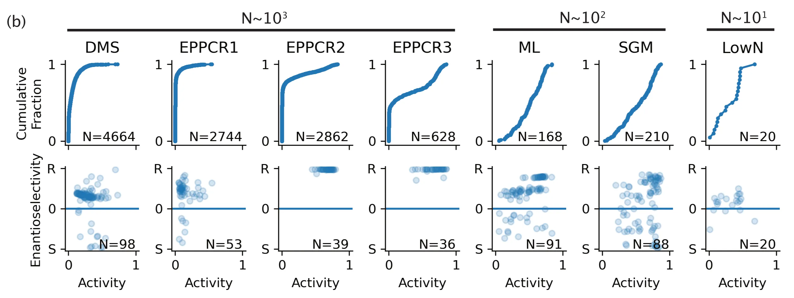
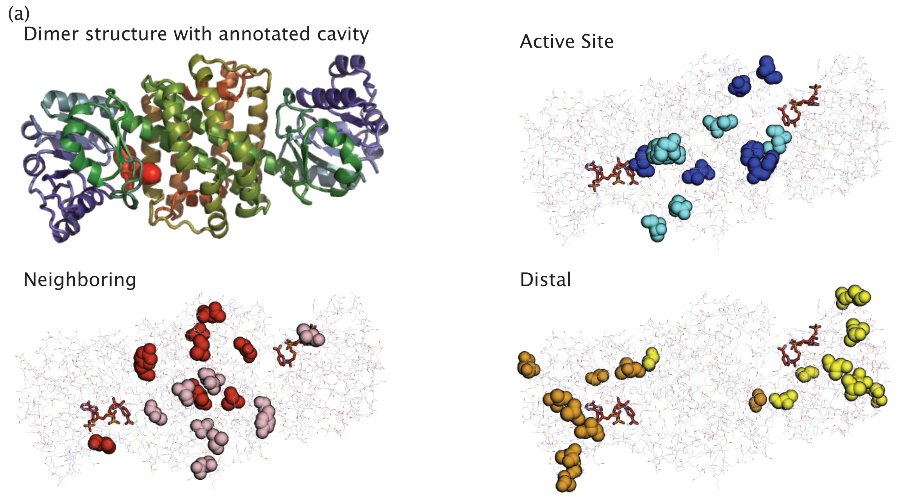
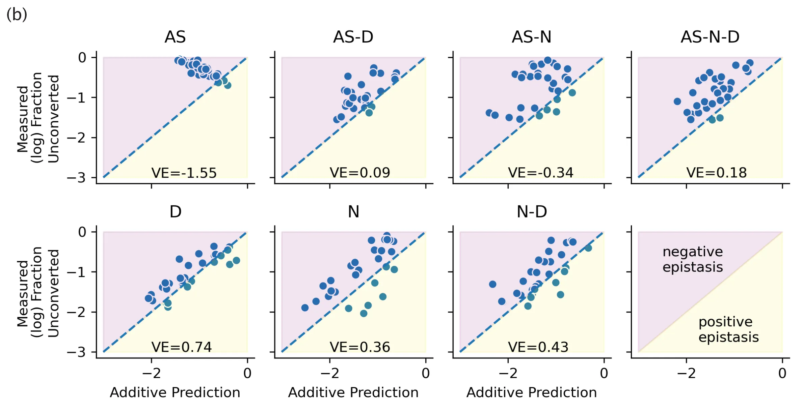

written by Eric J. Ma on 2021-09-12 | tags: science paper catalysis enzyme engineering machine learning data science
This is a blog post I've been wanting to put out for a while. It's about a really cool paper that I had the privilege of working on with colleagues at the Novartis Institutes for BioMedical Research (NIBR). If you have institutional access, you can read the paper online. Here is my layman's summary of the paper.
In 2019, while I was still at the Novartis Institutes for BioMedical Research (NIBR), I joined an internal startup team doing enzyme evolution in NIBR's chemistry department. This project was part of an internal innovation program, Genesis Labs, where teams are given the space and time to pursue a project idea. Our team wanted to compare and contrast how traditional directed evolution fared against machine learning-powered directed evolution (which we call machine-directed evolution in the paper).
Our enzyme of choice is IRED, which is an industrially relevant enzyme for chemistry applications. We had a choice of IREDs that catalyzed our desired reactions, some of which were good already and others that were somewhat middling and not ideal. Our goal wasn't solely to get a good IRED, however. We also wanted to compare machine-directed evolution against traditional directed evolution techniques. Therefore, we picked the "kinda middling" IRED-88 enzyme as our starter enzyme. That way, we could explore how quickly machine-directed evolution could help us climb the dynamic range of enzyme goodness vs. traditional directed evolution.
But what do we exactly mean by enzyme goodness? We meant to measure enzyme goodness on two axes: (1) substrate conversion into product and (2) chiral selectivity. Conversion measures how much substrate gets converted into the desired product; for us, higher conversion is better. Chiral selectivity, if you remember organic chemistry from 2nd-year science curricula, is all about getting the correct chiral form of the molecule; chirality results from having a tetrahedral geometry around carbon atoms. If you're curious to learn more, Wikipedia has a great article on this. When the enzyme catalyzes our reaction, we get a mixture of R- and S-chiral molecules; we were interested in maximizing the yield of R-chiral product while minimizing the production of S-chiral product.
To start, we generated a deep mutational scan (DMS) dataset. DMS requires the generation of a site-saturation mutagenesis library, where we generate all possible single-mutant variants of wild-type IRED-88. Doing so gave us a great starter dataset for machine learning purposes by covering a large proportion of single-mutant sequence space. Out of the roughly 6000+ mutants that we could have possibly generated, we cloned about 81% of them successfully. Then, we measured their activity; we also measured their chiral selectivity for a subset of them. In the subsequent paragraphs, I won't talk much about chiral selectivity. Still, you know that we always measured selectivity for a subset of highest activity mutants -- a subset, because chirality is harder to measure at scale.

Fig. 2(a) from our paper, deep mutational scan measurements. X-axis: position on linear amino acid sequence of IRED-88. Y-axis: amino acid substitution. Heatmap shows activity measurements for ~81% of all 6000+ possible single point mutations.

Fig. 2(b) from our paper, activity distributions. X-axis: Bayesian estimated activity of IRED-88 mutants. Y-axis, top panels: Activity cumulative distribution of our mutants. Y-axis, bottom panels: Enantioselectivity of our mutants.
Even without machine learning, that DMS dataset was highly informative! We happened to have a crystal structure of IRED-88 on hand. When we mapped what positions in the linear sequence were present in the crystal structure, we noticed that part of the N- and C-termini (head and tail of the sequence, respectively) were actually not present -- they probably were too floppy to be included as part of the solved structure. Yet, because we had measurements from the N- and C-termini mutants of IRED, we found that mutations in the C-termini were beneficial for enzyme activity. I think this means that a DMS dataset can help uncover potentially good mutants that we would never have guessed to take a look at, simply because they were missing in a crystal structure of the same protein.
At the same time, we did three rounds of traditional directed evolution. These are EPPCR1-3 in Fig. 2(b) shown above. One round was based directly on the wild-type, generating roughly 4000+ mutants (with replicates, so go ahead and imagine how many colonies we had to pick). Out of those enzymes, the winner turned out to be an okay-ish enzyme. However, in the interest of obtaining a good enzyme, we decided to take a winner from the deep mutational scan as our basis for a 2nd round and subsequent round of directed evolution. The winners of those next rounds all turned out to be pretty good. However, the number of things we had to screen was close to 10,000 mutants (with replicates). So, again, keep that number in mind: it's $10^4$ mutants measured, amounting to about $10^5$ activity measurements taken.
So now we moved on to machine-directed evolution. Here, our strategy was to train a machine learning model to learn the relationship between sequence and activity/chirality and then use that model to score in-silico proposed mutants. It's the most basic form of machine-directed evolution one can use. Nowadays, there's lots of hype around generative models of sequences and the likes. Still, back in 2019, we wanted to compare directed evolution against a known and robust baseline strategy before going to fancier approaches. The strategy we chose was a guess-and-check approach; we're not biasing the generation of molecules in any way whatsoever.
Note: For machine learning practitioners out there, by the way, this example follows my opinion on how one should go about building ML systems. Start with strong baselines first because you never know how long you'll need to debug the fancier systems when they go wrong.
What exactly was the model we used, and how did we take protein sequences and convert them into a numerical representation? Well, around 2019 was when the UniRep authors first put on the UniRep paper Biorxiv. My colleague Arkadij (intern at the time) quickly dug into it, replicating some of the results in the paper and extending it in other useful ways. Together, we reimplemented the entire model in JAX directly. That, plus user-friendly improvements to the model API, made it an easy-to-use tool for us to obtain a numerical descriptor set for our proteins. We then threw a Random Forest model on top of those numerical descriptors and trained it against our activity data.
That model turned out to be a great prioritizer but a horrible scorer. Using the prioritization strategy described in the paper, we could pick out high-performing mutants from the $10^5$ in-silico proposed mutants pool. Still, our predictions of their activity were off. That's okay, though, because ultimately, we were able to measure just $10^2$ proposed mutants to get an activity distribution that was significantly right-shifted compared to the $10^4$ mutants measured over three rounds of directed evolution. (So that you don't have to scroll back up to see the result, I've resurfaced the figure below - see the "ML" panel.) In this way, with a good-enough model, machine-directed evolution can be pretty sample-efficient.
This experiment was one that I helped design, and I was suuuuuuuper happy that we got to do it. One question I've had since grad school was this: "When does combining mutations result in linear additivity of our property of interest?" We'll have a superb invariant handle over enzyme evolution if we know the answer to this question. So, to answer this question, we took a hard look at the structure, identified positions that were either at the active site (AS), neighboring the active site (N), or distal to the active site (D). You can get a visual feel for these positions in the figure below.

Fig. 3(a) from our paper. Here, we highlight the active site, neighboring, and distal positions on IRED-88 that we mutated.
Then we took our best single mutants from each category, and generated double and triple combinations of those mutant categories. So, for example, we might combine two active site mutations or two distal mutations with one neighbouring. At its core, the idea was to test whether combinations of these categories of mutations resulted in linear additivity in activity.
The result? If you don't touch the active site, then you have a pretty good chance of being able to predict combination activity by simply adding up their individual activity values.

Fig. 3(b) from our paper. The results shown here are from our experiments probing linear additivity of mutations. We show that combining mutations in positions distal to the active site result in linearly additive mutations.
For me, this result was huge! At the time, "big billion parameter BERT models" were all the rage -- and for me, this trend represented intellectual laziness on the part of modellers. Was not the goal of modelling to get a quantitative handle over the invariants of a problem? Bucking the large model trend, with this experiment, we had confirmed that a tremendously more straightforward principle (adding mutations) for engineering enzymes was effective, and we uncovered the conditions under which that principle worked predictably.
On this point, when we received our reviewer's comments, one of them wrote:
the finding that linear combinations of mutations afford predictable activity increases is important
I remember being soooooooooo happy when I read that comment. Finally, someone recognized the importance of this point!
As for how the activity distribution looked? Just like the machine-directed round - right-shifted and with only $10^2$ samples measured. See Fig. 2(b)'s "SGM panel" (resurfaced below for convenience).
We also wanted to test-drive Low N engineering, a strategy that first popped up in the original UniRep paper. Low N engineering is similar in spirit to machine-directed evolution, except that in our case, we had to pretend that we didn't have access to the DMS dataset. Training a model on just 24 data points feels weird for a machine learner. Still, bolstered by the idea of linear additivity of mutations, we were confident that Low N would work out just fine. We took a random set of 24 mutants from the DMS dataset and trained a model on their activity. We then prioritized another 24 to order and test. Likewise, we found a shift in activity distribution, though not as dramatic as the machine-directed and structure-guided rounds. (This is the "LowN" panel in Fig. 2(b).)
Firstly, we showed that machine-directed evolution is a sample-efficient strategy for evolving enzymes! Rather than measure tens of thousands of mutants, we only had to measure hundreds to shift the enzyme activity distribution curve dramatically. I think of it as giving ourselves much better shots on goal.
Secondly, we uncovered the conditions under which simply combining mutations can result in predictable, additive increases in activity. Fancy models are not required for those circumstances! If you know roughly what a protein's structure is, you can find (what I think of as) the "linear basis functions" for enzyme engineering. Thus, linearly adding mutations should absolutely be a baseline for protein engineers and machine learners that one tries to leverage for engineering - or beat if trying to build fancier models.
That second point was, for me, the most satisfying piece of this work. If we can categorize sequence positions as being part of the (1) active site, (2) neighbours to the active site, or (3) distal to the active site, then I am pretty sure that simply adding two distal mutations together would provide the kind of additive effect that we desire. I also now have this hypothesis that a large reason for why machine learning in enzyme engineering works is because of linear additivity of mutational effects.
More importantly, I also learned a lot about the pace at which science moves. Data science in the biomedical research space is rate-limited by our ability to generate fit-for-purpose datasets. The rate at which we can generate fit-for-purpose datasets is, in turn, determined by people and equipment. High throughput measurements enabled us to generate the data we needed; if we didn't have that equipment, we'd be unable to do such a large-scale study. People are the other variable to factor in: I had to win the trust of my colleagues by really empathizing with how they made decisions. In this respect, my prior background at the bench and the empathy that comes with experience for the particular difficulties in executing experiments helped me win their trust. That trust, in turn, afforded me the credibility points to participate in experiment design.
I am now also of the belief that there's only so much we can do by leveraging public datasets; empirically, I have found myself reaching for public datasets only as a testbed to prototype a model, but have rarely used that public dataset as part of the final solution to our scientific problems. For example, in this project, we used public datasets to validate the model building piece. Still, ultimately our decisions could only be logically taken based on a model trained on fit-for-purpose data. A model trained on data for one assay cannot logically be used to predict results for another assay; things don't work that way. I learned, thus, that in research data science, we data scientists want to partner with colleagues who are willing to generate fit-for-purpose data for the problem at hand.
@article{
ericmjl-2021-machine-directed-evolution,
author = {Eric J. Ma},
title = {Machine-Directed Evolution},
year = {2021},
month = {09},
day = {12},
howpublished = {\url{https://ericmjl.github.io}},
journal = {Eric J. Ma's Blog},
url = {https://ericmjl.github.io/blog/2021/9/12/machine-directed-evolution},
}
I send out a newsletter with tips and tools for data scientists. Come check it out at Substack.
If you would like to sponsor the coffee that goes into making my posts, please consider GitHub Sponsors!
Finally, I do free 30-minute GenAI strategy calls for teams that are looking to leverage GenAI for maximum impact. Consider booking a call on Calendly if you're interested!